4．环
虽然环和理想的构造是熟知的并在戴德金和克罗内克关于代数数的著作中被利用过，但抽象理论却完全是20世纪的产物。理想一词已经被采用（第34章第4节）。克罗内克把环叫做“序（order）”，环（ring）这个词是希尔伯特引进的。
讨论历史以前，先讲清这些概念的现代意义是适宜的。一个抽象的环是一组元素组成的集合，它关于一种运算形成一个交换群，而且它还受制于可作用于任何两个元素的第二种运算；这第二种运算是封闭的并且是结合的，但可以是，也可以不是交换的；可以有，也可以没有单位元素．它还适合分配律
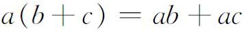
和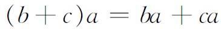
。环R的一个理想是这样一种子环M：如果a属于M，r属于R，则ar和ra都属于M。如果只有ar属于M，则M叫做右理想；如果只有ra属于M，则M叫做左理想；如果一个理想既是右理想又是左理想，则它叫做双边理想。单位理想是指整个环。由一个元素a生成的左理想（a）是由下面形式的元素全体组成的：
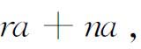
其中r∈R，n为任一整数。如果R有一个单位元素e，则
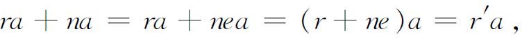
而r′则是R的任一元素。由一个元素生成的理想叫做主理想。仅由零元素组成的理想叫零理想，记作0。0和R以外的理想叫做真理想。类似地，如果a1，a2，…，an是环R中给定的m个元素，R有单位元素，则所有和数
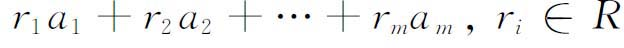
的集合是R的一个左理想，记作
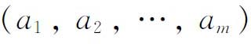
。它是包含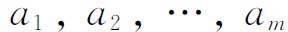
的最小的左理想。如果一个交换环R的每一个理想都可表示成如上的形式，则R叫做诺特环。因为环中任何一个理想都是环的加法群的一个子群，所以环R可以按理想M分成一些剩余类。如果R中的两元素a，b满足（a－b）∈M，则说a，b关于M同余，记作
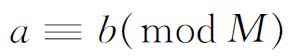
。如果环R到环R′的一个映射a→T（a）满足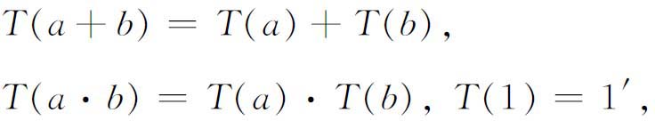
则T叫做环R到环R′的一个同态。在同态T下，R中对应到R′的零的元素全体叫做R的核，它是R的一个（双边）理想。当T呈满同态时，R′同构于R的以核为模的剩余类所成的环。反之，给定R的一个（双边）理想L，可作R模L的剩余类环，记作R／L，叫做R模L的商环，于是有R到R／L的同态，以L作为它的核。
环的定义并不要求每一元素（非零）关于乘法有逆元素存在。如果单位元素存在，而且每一个非零元素都有逆元素，则这个环叫做除环（或可除代数）；实际上它是一个非交换（或斜）域。韦德伯恩的结果已经指出（1905），一个有限除环是一个交换域。直到1905年已知的除环仅有交换域和四元数。后来迪克森作出一串新的除环，交换的和非交换的都有。1914年他(43)和韦德伯恩(44)给出了非交换域的第一个例子，它关于中心（与域中一切元素都交换的元素全体）的阶是n2(45)。
在19世纪晚期，已经造出了大量的各种具体的线性结合代数（第32章第6节）。这些代数，抽象地看都是环，当抽象环的理论形成之际，这些具体的代数就被吸收和推广。当韦德伯恩在他的文章《论超复数》（On Hypercomplex Numbers）(46)中继续嘉当（Elie Cartan，1869—1951）的工作(47)并推广了他的结果时，线性结合代数的理论和整个抽象代数的课题就受到新的推动。回想一下，超复数就是如下形式的数：
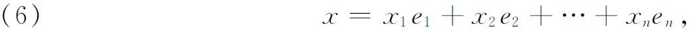
其中
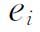
是量的单位，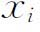
是实数或复数。韦德伯恩把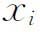
取作一个任意域F中的元素。他把这个推广了的线性结合代数简称为代数。处理这类广义代数，他不得不放弃他前人的方法，因为一个任意的域不都是代数封闭的。他也采取了而且完成了本杰明·皮尔斯关于幂等元素的技巧。在韦德伯恩的著作中，一个代数便是由形如（6）的线性组合的全体所组成，组合的系数现在是域F中元素。这些
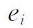
叫做基，个数有限，而且这个个数就叫这代数的阶。这样的两个元素的和由下式给出：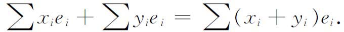
这代数中的一个元素x和域F中的一个元素a的乘积ax定义为
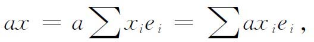
而这代数中两元素的积定义为
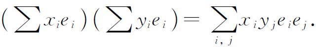
这定义的完成只需再用一个表来把每一乘积
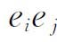
表示成所有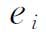
的某一线性组合，其系数属于F。乘法要求满足结合律。总可以添加一个单位元素（模）1到代数中去使得对于每个x都有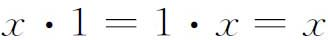
，于是系数域F就成为这代数的一部分。设A为一个代数。如果A的一个子集B对于A的运算也构成一个代数，则B叫做A的一个子代数。此外，如果对于A中元素x，B中元素y，还有xy和yx都在B中，则B叫做A的不变子代数。如果一个代数A可写成两个不变子代数的和，而这两个子代数除零元素外无公共元素，则A叫做可约的。这时A也叫做这两个子代数的直和。
如果一个代数除（0）和它本身外没有不变子代数，则它叫做单代数。韦德伯恩也引用而且修改了嘉当关于半单代数的概念。为此韦德伯恩利用幂零元素这一概念。一个元素x叫做幂零的（nilpotent），如果对于某正整数n，有
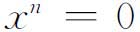
。一个元素x叫做真正幂零的，如果对于代数A中每一元素y而言，xy和yx都是幂零的。可以证明，一个代数A中真正幂零元素的全体所组成的集合是A的一个不变子代数（因而也是幂零不变子代数）。于是一个半单代数就是一个没有幂零不变子代数（不计仅由零元素组成的幂零不变子代数）的代数。韦德伯恩证明了每一个半单代数可以表示成不可约代数的直和，而每一个不可约代数等价于一个矩阵代数和一个可除代数（韦德伯恩叫它为本原代数）的直积。这意思是说，这不可约代数的每一个元素可以表示成一个矩阵，其元素取在该可除代数中。因为半单代数可以分解成一些单代数的直和，这个定理等于确定了一切半单代数。还有另外一个结果用到全矩阵代数的概念，它正好就是所有n×n矩阵组成的代数。如果一个代数的系数域F是复数而且没有真正幂零元素，那么它就等于一些全矩阵代数的直和。这是由韦德伯恩得到的结果的一个样品，它可以作为广义线性结合代数工作的一个指示。
环和理想的理论由埃米·诺特（1882—1935）把它置于更为系统化和公理化的基础之上。埃米·诺特是少数几个伟大的女数学家之一，她于1922年成为格丁根的讲师。当她开始她的工作时，环和理想的许多结果都已经知道，但是由于适当地确切表述了抽象概念，使她能够将这些结果纳入抽象理论之中。例如，她把希尔伯特的基定理（第39章第2节）重新表述如下：一个系数环上的任何多个变量的多项式所成的环，当这系数环有一个单位元素和一组有限基时，这多项式环本身也有一组有限基。在这种重新表述下，她把不变量理论变成了抽象代数的一部分。
多项式环的理想的理论已由拉斯克（Emanuel Lasker，1868—1941）(48)发展了。他给出一种决定一个已知多项式是否属于一个理想的方法，这理想是由r个多项式生成的。1921年(49)埃米·诺特证明，这种多项式理想理论能由希尔伯特基定理推出。由此，为整代数数的理想理论和整代数函数（多项式）的理想理论建立了一个共同的基础。埃米·诺特和其他人对环和理想的抽象理论作了非常深透的研究，并把它应用到微分算子环以及其他代数上去。可是这方面工作的报道过于专门，已超出本书范围了。